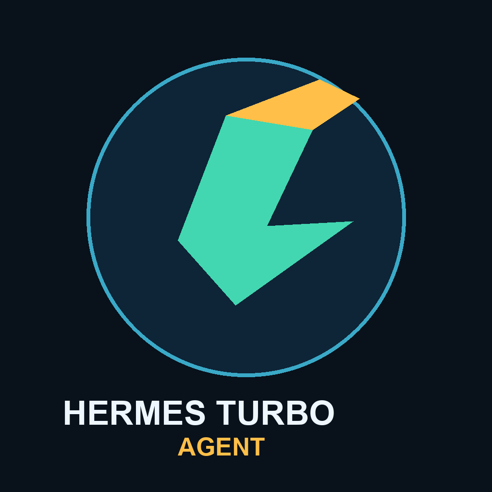

Desktop Variant
Built for workstation execution: coding, browser automation, desktop operations, reviews, release validation, and long `/goal` loops.
Hermes Turbo Agent is the renamed high-performance fork of Hermes Agent. It keeps the existing runtime and compatibility contracts, while exposing two operator-ready profile distributions: desktop and car.
hermes profile install ./distributions/hermes-turbo-desktop --name hermes-turbo-desktop --alias
hermes profile install ./distributions/hermes-turbo-car --name hermes-turbo-car --aliasLegacy benchmark material still lives in tota-agent.html and under `docs/assets/tota-*` while the rename propagates safely.

Built for workstation execution: coding, browser automation, desktop operations, reviews, release validation, and long `/goal` loops.
Built for voice-first copilot usage: quick capture, route-safe summaries, meeting transcription handoff, and safety-first orchestration.